Step by step to do an origami of a Jumping Frog!
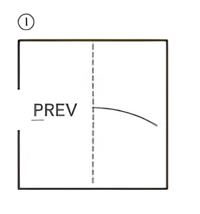1. Start with the Paper: Start with a square piece of paper. Fold it in half vertically and crease well, then unfold.
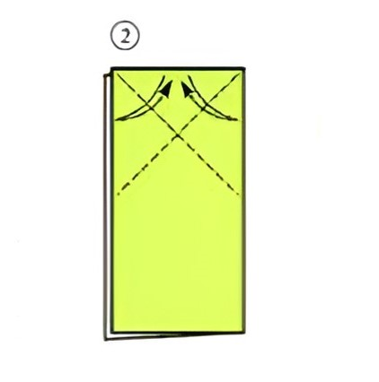2. Fold Vertically: Fold the paper in half vertically again, but this time do not unfold.
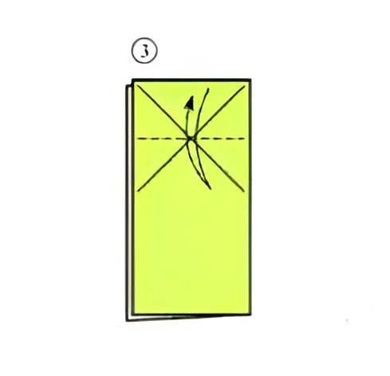3. Fold Again: Fold the top left and right corners down to the center line to form a triangle at the top.
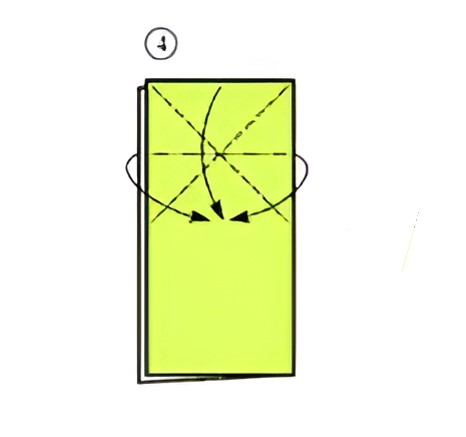4. Fold to form a top triangle: Fold the top triangle flap down along the center crease.
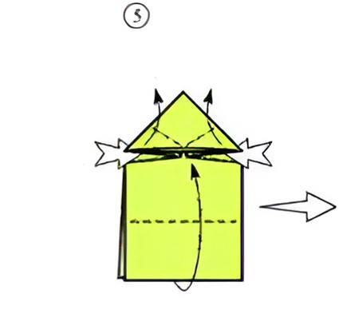5. Unfold the top Flap: Unfold the top flap and squash fold the sides, pushing them inwards to form a diamond shape at the top.
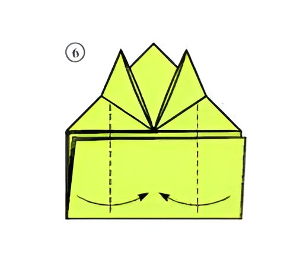6. Fold the Bottom Edge of the Paper: Fold the bottom edge of the paper up to meet the bottom of the diamond shape. Crease well.
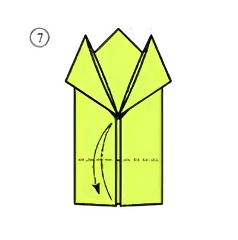7. Fold the top flap down: Fold the top flap down over the bottom section, making a straight horizontal fold.
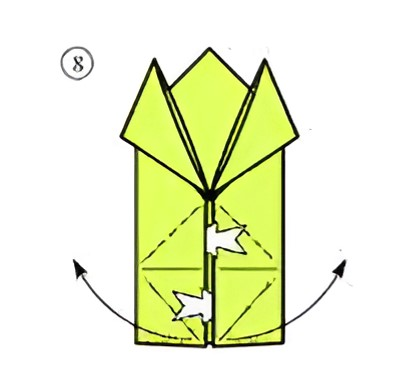8. Fold the bottom corners Diagonally: Fold the bottom corners up diagonally to the center line, creating two small triangles at the bottom.
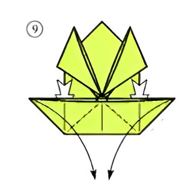9. Fold to shape a rectangular Fold: Fold the bottom edge up to the center line again, creating a rectangular fold at the bottom.
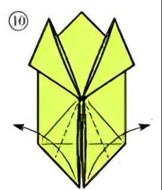10. Fold the small bottom triangles: Fold the small bottom triangles outward to form the frog’s back legs.
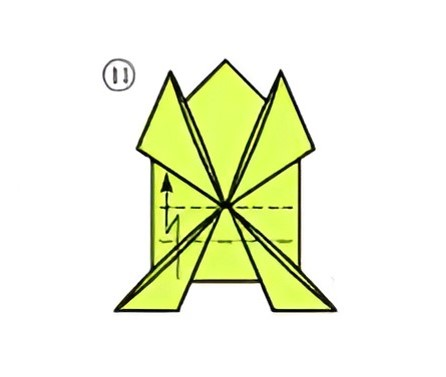11. Fold the entire model Verically: Fold the entire model in half vertically, bringing the bottom edge up to meet the top edge.
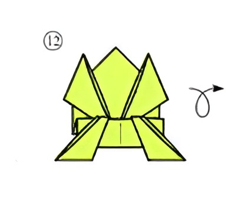12. Fold the top corners: Fold the top corners down to meet the center line, creating a point at the top.
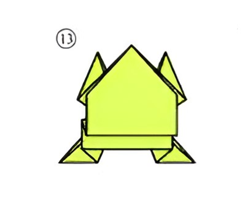13. Fold the bottom corners to create the legs: Fold the bottom corners outward to form the frog’s front legs.
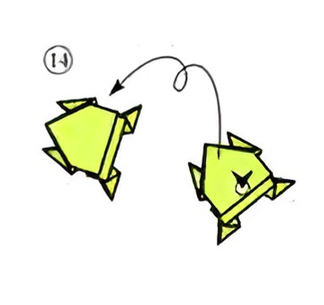14. Completion of the jumping frog: Your origami jumping frog is complete! Press down on the back edge and release to make the frog jump.